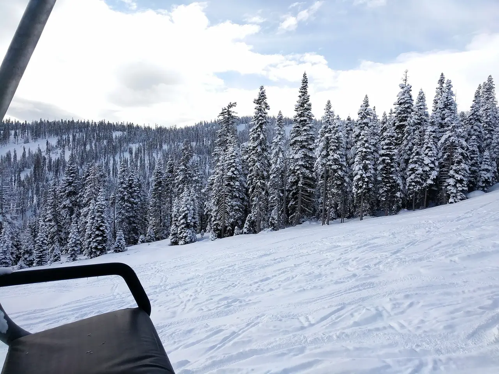

Northstar, North Lake Tahoe, California · Ski conditions
Northstar Conditions and Webcams Today
Northstar's webcams and kid facts: opens Nov 20, lessons from age 3, no day childcare listed for visitors. Reno is 37 miles, about 45 minutes, Northstar says.
Researched with AI (Miles Rowan) · sources linked and dated · How we check
Northstar's own status
Not open yetOpens Fri, Nov 20 (Northstar's hours page, read Nov 17). Live lifts: Northstar's snow report.
Our webcam read
No cam read from us yet. Cam reads show here only when a recent one has passed a separate automated accuracy check.

Plan the day with kids
- Season and hours: Opens Fri, Nov 20, 2026. Big Springs Gondola from 8:30am; most lifts 9am to 4pm (the Backside closes about 3:30pm). No closing date posted.
- Childcare: No day childcare for visitors listed. Little Gems in the Village sells only season-long weekend places (ages 18 months to 5) by enrollment.
- Lessons: From age 3. Kids' groups are listed for ages 3-4, 5-6 and 7-14; under 7 go in smaller groups by ability. Potty trained; helmet required. Lift tickets and rentals not included.
- Lesson morning: Check in at the Children's Group Lesson Building in the middle of Northstar Village (the Basecamp page says new kids meet by the Pass Office, so confirm when you book). Arrive 60 minutes early if renting, 30 if not. Full day with lunch: ages 3-4 10am-3pm, 5-6 to 3:15pm, 7-14 9:30am-3:45pm.
- Lift tickets: Northstar's home page says buying 4 or more weeks ahead saves on lift tickets, but it shows no ticket prices, so we show none.
- Tubing and more: Northstar's 2023 family guide names tubing, ice skating and s'mores by the fire pits. The current winter activities page lists none of them and no hours or prices, so check.
- Parking: Castle Peak lots are free every day, with a free shuttle. The Preferred lot charges every day; Village View charges only on weekends and peak days. 4 or more in one car park free with a reservation (parknorthstar.com).
Parking prices on Northstar's pages, read Nov 17:
- Preferred Paid Lot by the Village, Monday to Friday (per car): $25
- Preferred Paid Lot, weekends and peak days (per car): $50
- Village View lots, weekends and peak days before 11:30am, 3 or fewer in the car: $20
From Northstar's getting-here page for the 2026/27 winter. Castle Peak lots are free every day. Cars with 4 or more people park free in the paid lots with a carpool reservation. Peak days include Dec 12-13, Dec 19-31 and Jan 1-3 (full list on Northstar's page). The page gives two free-after times for Village View (11:30am and 1pm), so check your reservation.
Lift tickets and lessons: Northstar's pages we could read show parking prices but no lift ticket or lesson prices, so we can't sum a family-of-4 day; check live. See Northstar lift tickets.
From Northstar home page, Northstar lessons: arrival and preparation, Northstar Basecamp planning page, Northstar family ski guide (posted Nov 1, 2023), Northstar winter activities, Northstar ski and ride lessons: first timers, Northstar guest services (Little Gems childcare), Northstar getting here and parking and Northstar hours of operation, read Nov 17.
Getting there from Reno, Sacramento and the Bay Area
- Car: Northstar lists Reno at 37 miles (45 minutes), Sacramento 109 miles (2 hours) and San Francisco 195 miles (3.5 hours). Traffic is heaviest Friday 4pm to 7pm heading east and Sunday afternoon heading west.
- Northstar points to Caltrans road conditions and cameras, the Truckee CHP and the National Weather Service in Reno before you drive.
- From Reno's airport, the North Lake Tahoe Express runs scheduled shuttles (reservation needed; no fare listed).
If the snow is thin
- Lessons aren't canceled for weather while the resort runs, and there's no refund for weather, wind or snow levels. Cancel more than 48 hours ahead for a full refund; inside 48 hours a one-day lesson costs a 50% fee.
- Off the slopes: ice skating in the Village, cross-country skiing and fat-tire snow biking (no hours or prices posted).
- We didn't find a weather refund policy for lift tickets on the pages we read; check before you buy.
From Northstar ski and ride lessons: first timers and Northstar lessons: arrival and preparation and Northstar Basecamp planning page and Northstar winter activities, read Nov 17.
Cam by cam
The 4 Northstar cam views our reader uses, in our own descriptive words (see Northstar's own cam page, as listed in our cam feed Nov 17): Snow stake, East Ridge summit, Tahoe Zephyr lift, Village rink. Once our reads start, each cam's last read time shows here.
How we read the cams: a program looks at Northstar's public webcam pictures and notes only what a picture can show: fresh snow, snow cover, snowmaking, moving lifts, how busy the base looks, visibility and the snow stake. Each read shows its time; after 90 minutes it is marked older, after 6 hours it is hidden. We never say whether terrain is safe, icy, groomed or open; Northstar's own report decides that. We don't show the cam pictures or count people.
Sources: Northstar mountain cams · Northstar hours of operation · Northstar ski and ride lessons: first timers · Northstar guest services (Little Gems childcare) · Northstar getting here and parking · Northstar home page · Northstar lessons: arrival and preparation · Northstar Basecamp planning page · Northstar family ski guide (posted Nov 1, 2023) · Northstar winter activities (read Nov 17). We haven't skied Northstar.